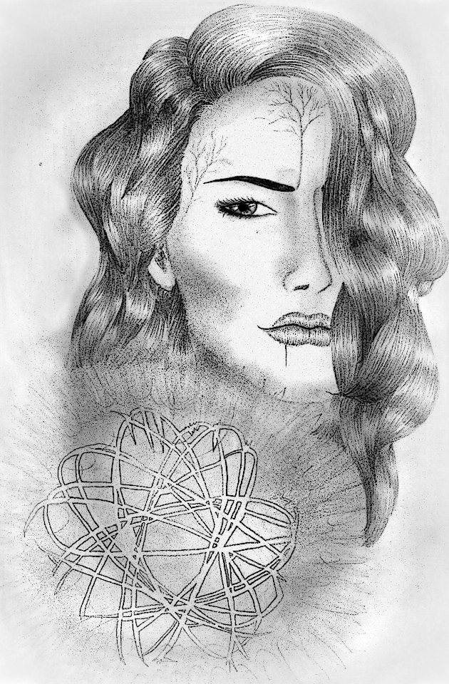

« předchozí článek | obsah čísla | následující článek »
Nott Ell zasáhla znepokojivá zpráva, zemi čarodějů a lidí ovládlo nejisté napětí a podezíravost. Jejich vůdce, princ Adelár beze stopy zmizel. Část jeho vojska byla spálena na úhel, část zmrzlá na kost.
Nott Ell, země, kterou obývali vyvolení. Žili zde čarodějové, jejichž moc ovlivňovala přírodní živly, tj. oheň, vodu, zemi a vzduch. Každý z čarodějů nebo čarodějek se již narodil se schopností vládnout jistým živlem. A žili zde i obyčejní lidé, zejména udatní bojovníci jak ženského tak mužského pohlaví. Mezi oběma národy kdysi probíhaly kruté války o nadvládu, jež rozpoutal vztah mladé čarodějky k lidskému muži, princi. Avšak její city k němu nebyly opětovány. Její zhrzená, nešťastná láska se proměnila v mučivou nenávist a pohrdání vůči všem. Rozhodla se pomstít. Jak se ukázalo, ona princezna byla Nejvyšší, která ze všech čarodějů měla nejničivější schopnosti skládající se ze všech živlů. Nejvyšší měla čaroděje chránit a po jejich smrti vstřebávat jejich sílu, avšak ona byla jiná. Nenáviděla svět, byla plná zloby a povýšenosti. Nechtěla nikoho ochraňovat, chtěla všem vládnout. A tak výhrůžkami, planými sliby a opojným slovíčkařením sestavila armádu čarodějů, kteří po jejím boku bojovali jak proti lidem, tak proti vlastnímu druhu. Tento zpočátku nepatrný spor vedl k dlouhým a krvavým bitvám. Mnoho lidí i čarodějů za ně zaplatilo svým životem, nakonec Nejvyšší porazili. Před svou porážkou však stihla pronést onu osudnou větu. „Já se vrátím.“ V ten okamžik bylo Staršími, kteří byli považováni za nejmoudřejší bytosti, jež znali tajemství magie, vyneseno proroctví, že v okamžiku, kdy se bude zdát, že je vše ztraceno, povstane Nejvyšší, jež sestaví společenství čarodějů a společnou, dosud nevídanou silou porazí dávné zlo, jež se ukrývá v temnotě. Od té doby uplynulo mnoho let. O proroctví se vědělo, ale nikdo mu příliš nevěřil. V Nott Ellu panoval mír a klid za vlády mladého lidského prince Adelára. Předmětem míru bylo, že nikdo z čarodějů žádnému člověku neublíží a naopak, avšak tento pakt byl nyní, jak se zdá, porušen.
Na kruhovém náměstí, které bylo poseto malými obytnými dřevěnými domečky, obchůdky a řemeslnými stánky se scházel rozlícený dav. Horečně mezi sebou diskutoval a hádal se. Lidé obviňovali čaroděje a naopak. Každou chvíli se mezi nimi schylovalo k souboji.
„Věděl jsem, že vy tu svou povýšenost na uzdě neudržíte!“ křikne do davu statný muž oblečen v kovářské kožené zástěře a poukáže sekerou na jednu z čarodějek. Čarodějové se od lidí odlišovali charakteristickým tetováním na pravé paži, které se každému novorozenému čaroději samo vyrýsovalo na kůži. Jeho zjev záležel na živlu, kterým každý čaroděj vládl. Vodní čarodějové měli ve znaku několik po sobě jdoucích vln, čarodějové ohně plameny, čarodějové vzduchu ornamenty, představující vítr, a čarodějové země košatý strom.
„My? Nikdo z nás by princi neublížil!“ brání se slovně, ale již se jí v ruce tvoří ledová koule, což působí její horlivá povaha.
„Když je to tak, tak proč jeho strážci uhořeli nebo umrzli? To my jsme rozhodně neudělali!“ odvětí hrubým hlasem.
„Měli bychom se uklidnit a domluvit se, co dál,“ vloží se do rozhovoru princův zástupce ze strany čarodějů. To, že prince zastupoval čaroděj, mělo vzbuzovat pocit důvěry. „Viděl někdo z vás prince v nejbližší době?“
Na jeho otázku nikdo nereaguje. Všichni umlknou a nejistě se po sobě vzájemně poohlížejí.
„Velso, řekni jim to,“ pošeptá nenápadně šestnáctiletý chlapec do ucha o rok starší kamarádce, černovlásce s ohnivým tetováním na paži.
„Meline, mlč. Nechci se do toho míchat a navíc…“
„Vy dva, co si to šuškáte?“ přeruší oba aktéry silný mužský hlas. Menší vousatý muž podsadité postavy se proplétá davem a zamíří k chlapci s dívkou. Přísně si oba prohlíží.
„Viděli jste snad prince?“ úlisně se otáže.
Chlapec s dívkou na sebe nervózně těkají očima. Melin se kousne do rtu. Velsa lehce svraští čelo, dotčena přítelovou neschopností mlčet. „Tak co? Odpověz!“ vyzve ji nedočkavě, až sebou dívka trhne.
„A…ano,“ vykoktá a přikrčí se, jakoby se chránila před úderem.
Po její odpovědi se okamžitě všechny pohledy přítomných obracejí na onu nešťastnici.
„Mluvila jsi s ním?“
„Ano,“ odpoví trochu sebejistě.
„O čem?“ vyzve ji.
Černovláska mlčí. Olízne si rty a vrhá na obecenstvo nevrlý výraz. Sklopí víčka a odtáhne hlavu.
„To nemohu říct.“
Její odmítavá odpověď rozvíří horkou debatu. Lidé nevěřícně, pohrdavě kroutí hlavami a odtažitě se od dívky odvrací.
„To říkám, vidíte, zase čarodějka. Můžou za to oni!“ křikne kdosi.
„To ne! Já jsem princi nic neudělala!“ brání se rozezleně. „Narazili jsme na sebe ale to je všechno, říkal mi, že…,“ přeruší svou obhajobu. Vzpomene si na včerejší rozhovor a na to, jak ji Adelár prosil, aby nikomu nic neřekla.
„Co ti říkal?“
„Nemůžu to říct,“ odsekne a uhne pohledem.
„Slyšíte to, prý to nemůže říct. Navrhuji, abychom ji vyslali najít a přivést zpět prince pro udržení stálého míru,“ vyhlásí impulsivně kdosi z davu. Lidé s ním nadšeně souhlasí. „Dokaž, děvče, že za to vy, čarodějové nemůžete!“ vmete jí do vyděšené tváře.
„Souhlasím,“ přitaká princův zástupce, k němuž se přidávají i další čarodějové.
„Počkat, to nejde. Já nic nevím, nevím, kde ho mám hledat,“ odmítá rozrušeně určený úkol.
„Jsi čarodějka, s těmi tvými čáry máry ho najdeš. Dáváme ti osmačtyřicet hodin!“
„Velso, tohle jsem nechtěl, myslel jsem, že jim to jen povíš,“ omlouvá se přítelkyni z dětství její kamarád Melin, když jsou mimo náměstí. „Proč jsi jim neřekla to, co mně? Že ti princ Adelár pověděl o Enyře, o které jsme si mysleli, že je mrtvá, a kterou Temní opět oživili. Že chce rozpoutat opět válku mezi lidmi a čaroději a převzít tak vládu nad oběma národy?“ vyzvídá nechápavě.
„Protože s ním šla armáda čarodějů, myslela jsem, že se vrátí. Copak to nechápeš? Byla to náhoda, že jsme se potkali, neplánovala jsem to,“ vypoví dotčeně. „Nenapadlo by mě, že se stane tohle. Evidentně se to nějak zvrtlo. Musím ho najít a přivést, nebo snad chceš rozpoutat válku mezi našimi národy? Předpokládám, že ne, takže ty, Meline, půjdeš se mnou!“ přikáže lidskému chlapci a rozhořčeně, naštvaná sama na sebe jediným trhnutím ruky, z jejíchž prstů vyšlene oheň, zapálí krb. Náhle se za nimi nečekaně ozve tlumený hlas. Oba se leknou a trhnutím se otočí. Za nimi stojí přízrak jednoho ze Starších, kteří se zjevovali, když bylo třeba a udělovali rady. Je to výjev menšího staršího muže s dlouhými bílými vlasy i vousy, oblečeného do šedivého, dlouhého pláště.
„Velso,“ osloví ji a přistoupí k ní. Černovláska se narovná a pokloní se. Zjevení Starších považují čarodějové za výjimečné a poklona představuje pokoru a úctu. Melin jen nejistě stojí a zmateně hledí kol sebe. Netuší, co dělat, a tak se raději pokloní také, i když nemusí.
„Velso, my víme, co se děje. Enyra povstala, a to je velmi zlé. Nedopusť, aby opět vypukly kruté války. Činy byly zapomenuty, ale zármutek a bolest nikoliv. Je to těžký úkol, přijmi zde prosím toto,“ podává jí jakýsi modrý, broušený klenot na koženém řetízku. „Je to Anatrys, kámen teleportace. Využij ho rozumně, smí být použit jen ve výjimečných příležitostech.“ Dopoví a stejně, jako se objevil, tak i mizí. Neslyšně se rozplyne.
„Páni, myslel jsem, že jestli tohoto budu někdy svědkem, bude to…,“ promluví Melin a zamyslí se nad tím, co chce vlastně říct.
„Magické?“ doplní ho Velsa, jež stále zaraženě stojí a trochu zklamaně se dívá do míst, kde duch stál.
„Jo, tak nějak.“
„Tak, jsme tady,“ hlesne Melin, když společně s čarodějkou Velsou stojí po strastiplné cestě skrze magické světy pod vysokým skalním útvarem, na jehož vrcholku se rozprostírá majestátní hrad. Atmosféra místa vyznívá tajemně. Nad hradbami se rozprostírá černočerná tma. Noční závěje vytvářejí magický kruh mozaiky, v jejímž odraze se zračí záblesky bouře.
Velsa se na svého přítele mlčky podívá. Obrátí se k němu a chytne ho za ruce.
„Meline, poslouchej,“ osloví ho a nejistě přerývá, co chce říct. Náhle si z krku sundává Anatrys a vkládá ho do rukou příteli.
„Co to děláš?“ vyjekne. „To nemůžeš,“ zastaví ji a snaží se dívce kámen vrátit.
„Kdyby se mi něco stalo, slib mi, že se vrátíš do Nott Ellu, slib mi to.“
„Velso, tohle nemůžu. Smí se použít pouze ve výjimečných situacích.“ Vyjekne.
„Nech si ho!“ zvýší hlas dívka. „Jsi pro mě jako bratr, nikoho jiného nemáme a nechci ti slibovat, že se vrátíme oba. Jeden z nás se musí vrátit a případně varovat ostatní,“ pousměje se a stiskne přítelovy dlaně. Pevně se obejmou. Oba doufají, že to není naposledy.
„Jdeme?“ Vyzve ho.
Chlapec pokývá. Ani se nenadějí a oba přátelé se ocitnou v rozlehlém sále. Uvnitř vše vypadá tak krásně a působivě. Barokně zdobené stěny, křišťálový lustr a pozlacené sloupy působí skutečně honosně. Avšak hrdinům je jasné, že vše, co kolem sebe vidí, je pouhá iluze, kterou Enyra vytváří. Obezřetně stojí vedle sebe a podezíravě se rozhlížejí. Každý závan větru, který kolem nich prolétne, může být ona. Velse se již v dlaních tvoří ohnivé koule, kterými by byla v případě potřeby připravena zaútočit. Vždy, když se s ní tohle děje, Melin od ní odstoupí do bezpečné vzdálenosti. Dívčiny oči se změní na nepřirozeně černé a na kůži jí vyskakují viditelné ohnivé žíly. Náhle se před nimi rozvíří prach a zvedne vítr. Z větrného tornáda se vynořuje postava ženy s dlouhými vlasy, které jí vlají ve vzduchu. Celá její postava, která je zahalena do peleríny ze zlaté látky, se vznáší ve vzduchu jako proutek. Ženina tvář je ukryta pod širokou kapucí.
„Ale, podívejme se, mám návštěvu,“ zaskřehotá úlisně.
„Přišla jsem si pro prince Adelára,“ štěkne zlostně Velsa. Melin, který stojí za ní, se ji pokouší zklidnit, ale ta jeho rad nedbá. Její odvaha vyvolává v Enyře pohrdavý smích.
„Pro koho? Pro něj?“ otáže se ironicky. Luskne prsty a před dívkou se vyjeví klec, ve které spatří zuboženého muže. Odmítavě, šokovaně kroutí hlavou a její ohnivé ruce přidávají na intenzitě.
„Velso, zmizte odtud!“ hlesne princ.
„Ne, nenechám tě tady. Pusť ho, myslela jsem, že jsi mrtvá!“ křikne na Enyru. Ta se opět pohrdavě zasměje.
„Jak dojemné, rozbrečíte mě. Chceš, abych ho pustila. Dobrá, zahrajeme si o něj. Ty a já. Co říkáš?“ vybídne ji. „Ty zmiz!“ poukáže na Melina. Než se Velsa stihne vzpamatovat, Melin je pryč.
„Co chceš?!“ zasykne.
Enyra se k ní ve větru doslova připlazí a zastaví se těsně u jejího obličeje.
„Něco pro mě uděláš, dám ti tři úkoly, když je splníš, pustím ho.“
„Ne, Velso, to nemůžeš. Ty úkoly jsou…,“ křikne na dívku muž, ale již to nestihne doříct. Enyra ho nechá se rozplynout.
„Tak co? Souhlasíš? Jsi čarodějka s živlem ohně, zvládneš to.“
„Dobře, jdu do toho,“ odsekne a nakloní se co nejblíže k Nejvyšší. Skrze kapuci vidí její zlostný úsměv, který nevěští nic dobrého.
První Enyřino přání je zabít ohnivého draka Hana a přinést jeho Zub síly. Tento úkol, ač s obtížemi, Velsa splní. Odevzdá Nejvyšší zub a přitom věnuje pohled uvězněnému princi, kterého Enyra zbavila hlasu, a který nespouští zrak z dívky. Ta, značně rozcuchaná a unavená, se na něj nepatrně povzbudivě usměje.
Další Enyřino přání představuje zabít vodní vílu Šamách a přinést její Křídlo svobody. Velsina odvaha klesá. Je si vědoma toho, že vodní bytosti jsou silnější než ohnivé, avšak nevzdává to. Jakmile Nejvyšší přinese ono křídlo, Enyra se rozzuří. Avšak po důkladném prohlédnutí dívčina stavu se bezcitně zasměje. Dívka se sotva drží na nohou. Vyčerpaná s tělem posetým krvavými ranami a pohmožděninami však vytrvá. Voda ubližuje ohnivým čarodějům stejně silně, jako když lidskou bytost pořeže nůž. Postaví se a hrdě se podívá na Enyru a na Adelára. Smutek, strach a soucit v jeho očích představuje pro Velsu hnací účinek. Nepatrně pokrčí koutky úst a souhlasně pokyvuje, čímž dává princi najevo, že ho odtamtud dostane.
„Jsi dobrá a silná. Nemyslela jsem si, že se dostaneš i přes Šamách, no dobře, a teď poslední úkol,“ vyhrkne Enyra. „Máš tušení, proč jsem ty věci potřebovala?“
„Ne, a ani mě to nezajímá,“ odsekne bez zájmu Velsa. „Řekni, co chceš!“
„Ale to by mělo. Když mě podsvětí osvobodilo, nevrátilo mě na svět v plné síle a to byl důvod, proč jsem toho ubožáka,“ poukáže na prince, „nezabila na místě. Sílu mi mohly vrátit dvě věci, Zub síly a Křídlo svobody. Potřebovala jsem naivku a nejspíš i zamilovanou hlupačku jako jsi ty, která by mi vrátila sílu.“ Umlkne.
Její slova mají demonstrativní účinek. Velsa nechápavě vydechne a ustupuje. Odmítá si přiznat krutou skutečnost. Princ, ač nemohl mluvit, se jí to snažil naznačit, ale ona to nechtěla chápat.
„Teď už asi víš, jaký je tvůj třetí úkol. Chceš prince, musíš mě zabít!“ zaskřehotá a spojí oba fragmenty do sebe. Náhle ze spojení vyšlehne obří záře, která čarodějku i prince na chvíli oslepí. Jakmile se jim zrak vrátí, uzří před sebou nejmocnější čarodějku v plné síle. Zářivá pelerína se změní na děsivou černou, její hlas je náhle hrubý a temný. Blond vlasy získají odpornou barvu, směs brčálově zelené a černé. Na jejich konečcích syčí hlavy hadů. Je dvakrát tak vyšší než předtím a vychází z ní nesnesitelný puch. Velsa, jež pomalu vstřebává, co vlastně provedla, klopýtá a zakrývá si oči dlaněmi.
„Tak co, Velso? Pořád chceš zachránit prince?“ zahřmí temným démonickým hlasem a ohlédne se na vězněného muže. Škubnutím ruky otevře jeho klec a vrátí mu hlas. Šokovaný muž dlouhými kroky přiskočí k mladé čarodějce a pomůže jí na nohy, neboť energie Nejvyšší vysává z Velsy moc.
„Uteč, Adeláre, zmiz. Nott Ell tě potřebuje, já to tu zvládnu,“ snaží se upokojit sama sebe.
„Nenechám tě tady, Velso, riskovala jsi pro mě. Porazíme ji společně!“
„Skutečně? To mě tedy zajímá, jak to uděláš,“ vyprskne Enyra a silou vůle odhodí prince na druhou stranu místnosti.
Velsa, která se plazí po zemi, věnuje Enyře skrze rozcuchané vlasy pohrdavý pohled.
„Vzdej to, Velso, mě neporazí obyčejná čarodějka. Nebo myslíš, že mi ten tvůj ohýnek ublíží?“ Vysmívá se.
Enyra se rozchechtá. Mladá čarodějka se postaví na nohy a utře si krev, která jí teče po tváři díky zásahu vody od Nejvyšší. Chce se bránit, ale Enyra její zničené tělo pohodí na okraj svého sídla. Dívka nyní bezmocně leží na okraji balkonu velkého okna a bezmocně se dívá do propasti. Nevnímá výhrůžná slova nepřítele ani odvážný princův křik. Hledí dolů, kde skrze unavený zničený pohled rozpozná, že dole pod útesem stojí Melin a vede sebou armádu čarodějů. V záblesku nočního svitu měsíce spatří Anatrys, jež drží chlapec v rukou a předává ho jednomu z čarodějů. Velsa se zazubí. Sebere poslední zbytky sil, postaví se a zpříma pohlédne na Nevyšší.
„Obyčejná čarodějka možná ne, ale co takhle společenství čarodějů?“ pronese rozhodně. Náhle rozpřáhne ruce, ze kterých vyšlehnou do výšky obrovské plameny. Celé její tělo pohlcuje necitelný živel, až Velsa působí jako hořící pochodeň. K překvapení Enyry se za ní, pomocí teleportace, zjevují další a další čarodějové všech živlů. Obklopují mocnou čarodějku tak, že není úniku. Všichni vypadají podobně jako Velsa jen s jejich živlem. Jejich těla ovládá jejich síla. Princ Adelár stojí v němém úžasu, ale s nadšeným smíchem. Mezi lidmi se totiž říkalo, že když bude nejhůře, objeví se někdo, kdo dokáže spojit čaroděje a ze síly jejich živlů vyvolat Společenství čarodějů, kteří se postaví zlu. Toto proroctví se právě naplňuje. Jakmile totiž tělo čaroděje ovládne jeho síla, je naprosto pohlcen a odevzdán svému živlu.
„Úplně tak naivní nebudu, Enyro! Vzpomínáš si, jak jsi poslala pryč Melina? To byla chyba,“ vypoví povýšeně. „Měl Anatrys, a ty moc dobře víš, co to je. Vrátil se do Nott Ellu, aby všem řekl, co se děje a přivedl nás,“ vysvětluje jí její chybu. „A jak můžeš vidět, spolčili jsme se proti tobě, takže ani tvé živly nás nedokážou porazit. Pochop to, nebudeš nám vládnout, Enyro! Teď už tě podsvětí nedokáže přivést zpět!“ ukončí svůj proslov.
Enyra se vzpouzí a křičí, avšak na její popud se všichni čarodějové dostávají do jakéhosi transu. Zvednou ruce a vzhlédnou do stropu. Silou své mysli z jejich těl vyšlehnou směrem k Enyře obrovské víry větru, necitelné plameny, proudy vody a spletité propletence rostlin a větví. Síly všech živlů dohromady, to vidí princ Adelár poprvé. Nevěřícně hledí na tu úžasnou devastující zkázu. Skrze mohutná, nepřehlédnutelná tornáda přírodních živlů je slyšet necitelný, posmrtný křik Nejvyšší, jejíž stín, který se kdysi vznášel nad hlavami ostatních a který spalovala neuvěřitelná síla, se jen bezmocně kácí k zemi. Z Nejvyšší čarodějky zbývá jen černý popel. Jakmile je po všem, vrátí se čarodějové opět do své lidské podoby. Rozhlížejí se po sobě a vítězně se usmívají. Jeden z čarodějů vzduchu ještě pohybem ruky rozfoukne čarodějčin popel. Tento čin vzbudí v ostatních hlasitý posměšek.
V Nott Ellu všichni oslavují vítězství a návrat prince Adelára. Nadšeně ho vítají a skandují ovace. Všichni jsou šťastní. Jen na Velsu se zapomíná. Přenesla se sice do svého světa, avšak zpovzdálí sleduje celou tu slávu. Drží se v ústraní, přestože ví, že to ona dokázala vyvolat společenství živlů. S úsměvem pokývá hlavou a chystá se zmizet. Nikým nepozorována míří do svého prostého příbytku, když v tom zpozorní. Jakmile stojí přede dveřmi, podvědomí ji žene, aby se otočila. Obyvatelé Nott Ellu, lidé i čarodějové před ní pokorně klečí, dokonce i sám princ Adelár.
„Co to má být?“ táže se dojatě.
„Velso, jsi Nejvyšší,“ vyjeví se před ní jeden ze Starších.
„Cože, já? To ne, vždyť ovládám jen oheň,“ nechápe.
„Teď už nikoliv. Díky tobě povstalo společenství a ty jsi do sebe vstřebala všechny naše živly. Jsi Nejvyšší!“ dořekne. Vyzve ji, aby něco vyzkoušela. Ohromená dívka trhne rukou, jejíž pokožku začne obklopovat voda, která se nepřirozeně vznáší ve vzduchu, jakoby nepůsobila zemská přitažlivost. To stejné udělá i s druhou, ta se ale ocitne v jednom ohni. Náhle, hnána svou vůlí, zavře oči a silou mysli zvedne vítr, který kolem tváří přítomných příjemně vlaje. Větve stromů se díky její moci rozpohybují a různě mezi sebou kroutí.
„To není možné,“ špitne a nadšeně se zazubí.
„Jsi Nejvyšší čarodějka,“ utvrdí ji tlumeně, „ty a princ Adelár…“ Dojde k němu a dovede ho k šokované dívce. Princ se postaví vedle ní a jemně ji vezme za ruku. Dívka mu věnuje zaskočený úsměv. Oba současně se podívají do tváří svých poddaných. Velsin úsměv se rozšíří, jakmile se střetne s Melinovým pohledem, který se na ni povzbudivě usměje.
„…vy jste teď našimi vůdci!“ dořekne Starší a poklekne i on.